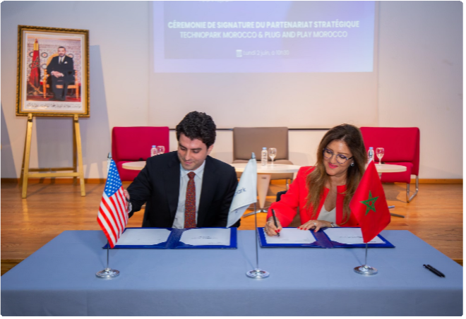
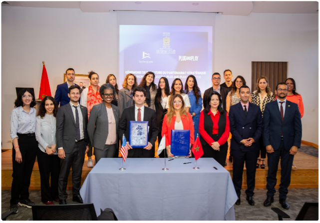
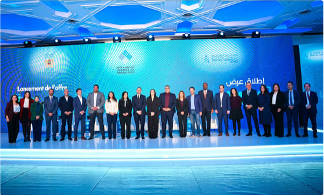

L'année 2025 s'inscrit comme une étape de consolidation pour le Technopark, marquée par le renforcement et la structuration de parcours d'accompagnement de qualité, destinés à soutenir le développement de startups à fort potentiel sur l'ensemble du territoire national.
Dans un environnement entrepreneurial en constante évolution, le Technopark a poursuivi en 2025 la structuration d'une offre d'accompagnement progressive et cohérente, couvrant les différentes phases du parcours entrepreneurial. L'accent a été mis sur la montée en qualité des dispositifs déployés, leur articulation autour de parcours clairs et leur adaptation aux besoins réels des startups, notamment en matière de structuration organisationnelle, de financement et de renforcement de la traction marché et du positionnement économique.
Les actions menées au cours de l'année ont permis d'améliorer l'encadrement des startups à fort potentiel et de renforcer leur capacité à franchir des seuils clés de croissance. Cette approche a favorisé une meilleure préparation aux exigences du marché, tout en consolidant les modèles économiques, les capacités opérationnelles et l'aptitude à se projeter sur des marchés élargis, tant au niveau national qu'international.
Les résultats enregistrés en 2025 témoignent de l'impact économique du Technopark et de la pertinence de son modèle d'accompagnement, avec : un taux de succès des startups accompagnées de 90 %, une génération d'un chiffre d'affaires annuel cumulé de 1,2 milliard de dirhams, un taux d'export de 35 %, traduisant l'ouverture croissante vers les marchés internationaux, et la création de 1 700 emplois qualifiés sur l'année 2025, confirmant la contribution du Technopark à la création de valeur et à l'emploi à forte valeur ajoutée.
Parallèlement, l'année 2025 a été marquée par la poursuite de la consolidation du réseau Technopark, avec la montée en régime des sites régionaux et le renforcement de l'accompagnement de proximité. Cette dynamique a permis d'élargir l'accès aux dispositifs d'appui, de renforcer l'ancrage territorial du Technopark et de favoriser l'émergence de projets innovants dans les différentes régions.
À travers ces réalisations, le Technopark confirme son rôle de plateforme nationale d'accompagnement des startups à fort potentiel, en mettant l'accent sur la qualité des parcours proposés, la performance économique des startups accompagnées et la création de valeur durable.
Cette orientation vise à soutenir l'émergence de champions nationaux de l'innovation, capables de se développer de manière pérenne, de créer de l'emploi qualifié et de contribuer activement au dynamisme et au rayonnement de l'écosystème entrepreneurial marocain.
La stratégie Maroc Digital 2030 constitue aujourd'hui le cadre structurant de l'ambition numérique du Royaume. En 2025, le Maroc franchit une nouvelle étape dans sa transformation digitale : au-delà d'une simple logique de transition, le numérique s'affirme comme un levier stratégique de compétitivité économique, d'amélioration de la qualité des services publics et de création de valeur.
Cette dynamique traduit la volonté de positionner le digital comme un moteur de modernisation de l'économie, de développement de nouveaux modèles d'affaires et d'élargissement des opportunités d'investissement et d'emploi, tout en facilitant l'accès des citoyens aux services publics.
La stratégie Maroc Digital 2030 repose sur une architecture claire et opérationnelle, structurée autour de deux axes stratégiques majeurs et portée par un dispositif de gouvernance dédié à assurer une mise en œuvre efficace et coordonnée des priorités nationales :
Moderniser et rendre plus accessibles les services de l'État, en déployant des solutions numériques orientées usager à l'échelle nationale.
Développer et stimuler le secteur digital afin de créer de la richesse, des emplois et des solutions numériques locales.
En 2025, une dynamique majeure a été enclenchée pour rendre l'administration plus accessible, plus efficace et plus orientée usager. Le Maroc a désormais plus de 600 services publics digitalisés, dont 300 destinés aux citoyens, 200 aux entreprises et 100 aux administrations publiques, consolidés progressivement au sein du portail national « e-services ».
Cette avancée a été accompagnée d'une refonte complète des parcours administratifs, passant de la simple dématérialisation à une réingénierie des démarches de bout en bout, afin de réduire les délais, améliorer l'ergonomie des services et renforcer la transparence. Cette transformation contribue à l'ambition nationale de hisser le Maroc dans le Top 50 du classement EGDI des Nations unies à l'horizon 2030.
La stratégie Maroc Digital 2030 a renforcé la dynamisation de l'économie numérique à travers le lancement d'initiatives structurantes dédiées à l'entrepreneuriat technologique. L'offre Startup Venture Building (VB) constitue le dispositif central d'accompagnement, avec l'ambition de soutenir plus de 800 startups innovantes sur trois ans, grâce à une enveloppe de plus de 700 millions de dirhams.
Mis en œuvre avec plusieurs opérateurs nationaux et internationaux, dont Technopark, ce programme propose un ensemble d'instruments financiers couvrant les différentes phases de développement des startups, de l'idéation à l'amorçage.
En complément, l'initiative Startup VC vise à structurer l'industrie nationale du capital-risque et à renforcer les capacités d'investissement dans les startups marocaines. Un mécanisme catalytique porté par le Ministère de la Transition Numérique, le Fonds Mohammed VI pour l'Investissement, la CDG et Tamwilcom permet de soutenir les sociétés de gestion de fonds à travers des mécanismes de partage du risque ou de co-investissement. Une sélection de neuf sociétés de gestion de fonds VC a été opérée en 2025 afin de financer les startups marocaines sur les segments pre-seed, seed et séries A, avec un potentiel d'investissement global estimé à près de 2,5 milliards de dirhams.
Ce dispositif vise à attirer des capitaux nationaux et internationaux et à créer un continuum de financement, allant de l'idéation jusqu'aux phases de croissance, afin de favoriser l'émergence de startups à fort potentiel et de positionner le Maroc comme hub régional de l'innovation et du capital-risque en Afrique.
Ces initiatives s'inscrivent dans une ambition plus large de renforcement des compétences numériques, avec l'objectif de former 100 000 talents par an d'ici 2030, et de création d'emplois dans les métiers du digital, la stratégie visant 240 000 emplois directs à l'horizon 2030. Parallèlement, les pouvoirs publics travaillent à la mise en place d'une Startup Policy nationale destinée à améliorer le cadre réglementaire, faciliter l'accès des startups aux marchés et promouvoir les solutions digitales « Made in Morocco ».
En 2025, les principaux classements internationaux offrent une lecture utile du positionnement du Maroc dans l'économie numérique mondiale. Ils mettent en évidence des avancées notables en matière d'innovation et de confiance numérique, tout en soulignant les efforts à poursuivre pour consolider la compétitivité et l'impact économique du digital. Ces indicateurs permettent ainsi d'apprécier la trajectoire du Royaume dans un contexte marqué par la mise en œuvre de la stratégie Maroc Digital 2030.
Le Global Innovation Index (GII) constitue l'un des indicateurs de référence pour évaluer la capacité d'un pays à générer, absorber et diffuser l'innovation au sein de son économie. En 2025, le Maroc se positionne à la 57ᵉ place mondiale sur 139 pays, enregistrant ainsi son meilleur classement historique et une progression notable par rapport à 2024 (66ᵉ place).
Cette évolution traduit une dynamique positive de l'écosystème national de l'innovation, portée notamment par le développement de l'entrepreneuriat technologique, le renforcement des capacités en recherche et innovation et la montée en puissance des initiatives publiques en faveur de la transformation numérique. Elle contribue également à renforcer la crédibilité du Maroc auprès des investisseurs et partenaires internationaux, en signalant la consolidation progressive d'un environnement favorable à la création de valeur technologique et à l'émergence d'entreprises innovantes.
Les données relatives à l'écosystème startup complètent les classements internationaux en rendant plus tangible la dynamique entrepreneuriale. Selon le Global Startup Ecosystem Index 2025 de StartupBlink, le Maroc se classe 88ᵉ mondial, en progression de quatre places par rapport à 2024, et figure désormais dans le Top 10 africain. L'écosystème enregistre par ailleurs une croissance annuelle estimée à 23,1 %, l'une des plus élevées d'Afrique du Nord.
Cette dynamique est portée principalement par Casablanca, qui s'affirme comme le principal hub entrepreneurial du pays, tandis que Rabat et d'autres territoires commencent à émerger progressivement. Cette évolution confirme le dynamisme entrepreneurial du Maroc, tout en soulignant la nécessité de poursuivre les efforts de structuration, de financement et d'accompagnement afin de soutenir durablement cette trajectoire de croissance.
Le Network Readiness Index (NRI) évalue la capacité des pays à exploiter pleinement les technologies numériques à travers quatre dimensions clés : les infrastructures technologiques, la gouvernance, les compétences de la population et l'impact économique et sociétal du numérique. En 2025, le Maroc se classe 73ᵉ sur 133 pays, avec un score global de 45,93.
Ce positionnement traduit des avancées progressives dans le développement des infrastructures numériques et l'adoption croissante des usages digitaux. Il met toutefois en évidence des marges de progression importantes, notamment en matière de gouvernance digitale et de transformation du numérique en levier de productivité et de création de valeur. L'enjeu pour les prochaines années sera ainsi d'accélérer la conversion de la maturité technologique en impact économique tangible.
En matière de confiance numérique, le Maroc se distingue par un positionnement particulièrement favorable. Selon le Global Cybersecurity Index de l'Union internationale des télécommunications (UIT), le Royaume est classé Tier 1, une catégorie réservée aux pays considérés comme les plus avancés au monde en matière de cybersécurité.
Ce classement constitue un atout stratégique pour l'attractivité de l'écosystème numérique marocain, en renforçant la confiance des investisseurs, des entreprises et des partenaires internationaux. Il représente également un avantage compétitif pour les startups et entreprises technologiques, notamment dans les secteurs sensibles où la protection des données, la sécurité des infrastructures et la fiabilité des systèmes sont des prérequis essentiels.
L'E-Government Development Index (EGDI) des Nations Unies évalue la maturité des administrations dans la fourniture de services publics numériques à travers trois dimensions : les services en ligne, les infrastructures télécoms et le capital humain. Dans l'édition 2024, le Maroc se classe 90ᵉ sur 193 pays, poursuivant une trajectoire d'amélioration après la 101ᵉ place en 2022 et la 106ᵉ en 2020.
Cette progression reflète les efforts engagés pour moderniser l'administration et élargir l'accès aux services publics numériques. Elle souligne toutefois l'importance de poursuivre la transformation des services publics vers des plateformes plus intégrées, interopérables et centrées sur l'usager, afin de renforcer l'efficacité de l'action publique et l'expérience des citoyens et des entreprises.
Les indicateurs internationaux témoignent d'un Maroc engagé dans une transformation numérique progressive, portée par des avancées en matière d'innovation, de confiance numérique et de structuration de l'écosystème entrepreneurial, avec un enjeu clé : convertir cette dynamique en valeur économique durable.
Dans ce contexte, le Technopark intervient comme un acteur opérationnel en traduisant ces ambitions sur le terrain. À l'interface entre politiques publiques, entrepreneurs et partenaires de l'innovation, il accompagne les startups, soutient l'émergence de projets innovants et renforce les dynamiques territoriales, contribuant ainsi au développement de l'économie numérique marocaine.
À travers son réseau de sites et ses programmes d'accompagnement, le Technopark agit comme un hub de convergence entre entrepreneurs, investisseurs, institutions publiques et partenaires technologiques. Il contribue ainsi à structurer l'écosystème startup marocain, à renforcer les synergies entre acteurs et à soutenir l'émergence de filières technologiques à fort potentiel.
Présent dans plusieurs régions du Royaume, le Technopark participe à la diffusion de l'innovation au-delà des grands centres économiques. En accompagnant les entrepreneurs dans différents territoires et en développant des programmes régionaux, il favorise une transformation numérique plus inclusive et équilibrée, en ligne avec les ambitions nationales de développement territorial.
En 2025, la performance du Technopark s'apprécie à travers des indicateurs clés traduisant l'ampleur de son impact sur l'écosystème : plus de 500 entreprises innovantes accompagnées, un taux de pérennité supérieur à 90 % et plus d'un tiers des startups positionnées à l'international. Ces résultats confirment sa capacité à structurer des projets innovants et à les transformer en entreprises compétitives, créatrices de valeur et d'emplois.
Cet impact s'appuie sur un dispositif d'accompagnement intégré, aligné sur les standards internationaux, couvrant l'ensemble de la chaîne de valeur — de l'idéation à l'internationalisation — incluant incubation, accélération, accès au financement et aux marchés.
Ce continuum contribue à renforcer la compétitivité des startups marocaines et à consolider un écosystème dynamique, ouvert et connecté.
Sous l'impulsion du Ministère de la Transition Numérique et de la Réforme de l'Administration (MTNRA) et dans le cadre de la mise en œuvre de la stratégie Maroc Digital 2030, le Technopark a engagé une transformation stratégique visant à consolider son positionnement en tant qu'acteur central et structurant de l'écosystème entrepreneurial national.
Cette évolution se traduit par le renforcement d'un accompagnement à forte valeur ajoutée, articulé autour de programmes structurés et de dispositifs intégrés couvrant l'incubation, l'accélération et le venture building, avec pour objectif de stimuler la création, soutenir la montée en puissance et accélérer l'internationalisation des startups marocaines.
L'année 2025 marque à cet égard une étape décisive, portée notamment par le lancement de deux initiatives structurantes :
Lancé par le Technopark et Plug and Play, avec le soutien du MTNRA, ce programme vise à accompagner des startups à fort potentiel dans leur phase d'accélération et de passage à l'échelle.
Dans le cadre de l'initiative nationale portée par le MTNRA et Tamwilcom, le Technopark a été sélectionné comme structure de déploiement des dispositifs d'incubation à l'échelle nationale.
En juin 2025, le Technopark a lancé le Morocco Accelerator Program, un dispositif structurant dédié à l'accélération des startups à fort potentiel et à leur passage à l'échelle. Déployé en partenariat avec l'Accélérateur américain « Plug and Play » et avec le soutien du Ministère de la Transition Numérique et de la Réforme de l'Administration, ce programme s'inscrit dans la dynamique de renforcement des mécanismes d'accélération et d'internationalisation des startups marocaines.
Ce partenariat, conclu pour une durée de deux ans, prévoit le déploiement de quatre cohortes successives avec l'objectif d'accompagner près de 70 startups marocaines, y compris celles portées par la diaspora. Le programme vise à soutenir leur croissance en activant des leviers clés de développement : accès au marché, préparation à l'investissement, renforcement des compétences entrepreneuriales et connexion aux réseaux internationaux d'innovation, de grands comptes et d'investisseurs.


Aligné avec la vision de la stratégie Maroc Digital 2030, le Morocco Accelerator contribue à structurer un nouveau palier d'accompagnement pour les startups, orienté vers l'accélération de la croissance, l'ouverture à l'international et la création d'impacts économiques mesurables, consolidant ainsi le positionnement du Maroc comme hub régional de l'innovation numérique.
En décembre 2025, le Technopark a été sélectionné dans le cadre de l'initiative nationale Startup Venture Building (SVB), une déclinaison opérationnelle de la stratégie Maroc Digital 2030 dédiée au renforcement de l'écosystème des startups. Cette sélection positionne le Technopark comme opérateur pour le déploiement de programmes d'incubation à l'échelle nationale.

Déployée sur une période de trois ans, l'initiative vise l'accompagnement de 240 startups en phase d'incubation à travers un dispositif structuré fondé sur des processus de sélection rigoureux, un suivi renforcé et un déploiement coordonné à l'échelle nationale. Dans ce cadre, le Technopark contribue à structurer des parcours d'incubation permettant aux porteurs de projets de transformer leurs idées en startups viables, capables de franchir les premières étapes de validation de marché.
Ce programme constitue également un levier majeur de territorialisation de l'accompagnement entrepreneurial, en élargissant l'accès aux dispositifs d'incubation au-delà des principaux pôles urbains, en s'appuyant sur le réseau national du Technopark, et en structurant un pipeline de startups innovantes mieux préparées à accéder au marché, aux compétences clés et aux premiers financements.
Le Technopark enregistre une progression continue du nombre d'entreprises hébergées, illustrant à la fois la dynamique de développement de son réseau et son attractivité croissante auprès des entrepreneurs technologiques. Cette évolution s'inscrit pleinement dans une dynamique de structuration et de maturation de l'écosystème startup marocain à laquelle le Technopark contribue pleinement.
En accueillant un nombre croissant d'entreprises et en maintenant une proportion significative de startups en phase early stage (moins de deux ans d'activité), il contribue à alimenter le pipeline entrepreneurial national, en favorisant l'émergence de startups à fort potentiel et le développement continu de solutions innovantes dans des secteurs stratégiques.
L'évolution des entrées et sorties d'entreprises entre 2021 et 2025 reflète la dynamique du réseau Technopark, caractérisée par une attractivité soutenue et un renouvellement continu du portefeuille d'entreprises. Cette dynamique s'inscrit dans un modèle structuré, où la durée d'hébergement est limitée à cinq ans, favorisant un cycle vertueux de renouvellement et d'optimisation des capacités d'accueil. Elle se traduit également par un niveau d'occupation élevé, avec des taux atteignant 100 % sur les sites de Casablanca, Rabat et Tanger, et une moyenne d'environ 70 % sur les autres sites, témoignant de l'attractivité du dispositif à l'échelle nationale.
En 2025, le réseau enregistre 156 nouvelles entrées contre 134 sorties, confirmant une dynamique positive et un taux de rotation global de 38 %. Ce taux traduit un renouvellement moyen du portefeuille sur un cycle d'environ 3 ans, illustrant un modèle entrepreneurial actif où l'arrivée régulière de nouveaux projets vient enrichir le vivier d'innovation, tandis que les sorties correspondent, pour une part significative, à des trajectoires de maturation, d'extension ou de redéploiement des entreprises.
Plus qu'un simple indicateur de flux, ce taux de rotation illustre la capacité du Technopark à maintenir un équilibre entre renouvellement entrepreneurial et consolidation du portefeuille, tout en accompagnant efficacement la montée en puissance des entreprises résidentes.
La répartition entre entreprises digitales et startups reflète l'équilibre structurant du modèle Technopark. Si les entreprises digitales constituent la majorité du portefeuille, assurant stabilité économique, ancrage marché et création d'emplois, la présence significative de startups traduit la capacité du Technopark à alimenter en continu le vivier d'innovation et à accompagner l'émergence de nouvelles générations d'entrepreneurs technologiques.
Toute entreprise digitale est éligible à l'intégration au Technopark. Toutefois, la distinction entre startups et TPE digitales s'inscrit dans une logique stratégique visant à structurer deux parcours d'accompagnement complémentaires et différenciés. D'une part, un parcours dédié aux startups, résolument orienté vers l'innovation, la validation de marché, l'accélération et la scalabilité. D'autre part, un parcours destiné aux TPE digitales, axé sur la structuration, le développement commercial, la consolidation des modèles économiques et le renforcement des capacités opérationnelles.
Cette différenciation traduit une volonté affirmée du Technopark de promouvoir davantage l'innovation et la scalabilité, en concentrant des dispositifs à forte intensité d'accompagnement sur les projets à fort potentiel de croissance, tout en assurant un socle solide de développement pour les entreprises digitales. Elle permet ainsi d'orchestrer un continuum de croissance, où les startups peuvent évoluer vers des structures plus matures, contribuant à la consolidation d'un tissu technologique national innovant, compétitif et durable.
📌 Entreprise digitale : Une entreprise ou PME digitale est une entreprise qui s'appuie sur les technologies numériques pour créer, délivrer ou commercialiser sa proposition de valeur, souvent à travers des plateformes, des données ou des services en ligne.
🚀 Startup : Jeune entreprise innovante à fort potentiel de croissance, en phase de recherche et de validation de son modèle économique, souvent portée par une technologie disruptive ou une solution à fort impact.
Dans la continuité de cette structuration du portefeuille, l'analyse par stades de maturité des startups met en évidence la fonction de progression portée par le modèle Technopark.
En 2025, la maturité des entreprises résidentes reflète un réseau qui fonctionne comme un véritable parcours de développement entrepreneurial, capable d'accueillir un flux continu de nouvelles structures tout en accompagnant leur évolution vers des stades plus avancés.
Le portefeuille demeure majoritairement composé de startups en phase d'amorçage (Startup-Start) représentant 62%, tandis que 38% évoluent déjà en phase d'accélération (Startup-Accel), traduisant la progression d'une partie des entreprises vers des niveaux de structuration plus avancés.
Cette progression repose sur un dispositif d'accompagnement structuré et complet, traduisant le déploiement de la feuille de route stratégique du Technopark, articulée autour d'une offre intégrée couvrant plusieurs leviers clés : le financement, les opportunités de marché, les réseaux, les talents, la formation et l'innovation.
La diversité des secteurs d'activité représentés au sein du Technopark reflète la richesse de l'écosystème numérique marocain. Cette cartographie offre une lecture globale des domaines d'intervention des entreprises, de leur niveau de maturité ainsi que des leviers susceptibles de soutenir leur croissance.
Le Technopark veille ainsi à maintenir un mix équilibré d'entreprises en termes de secteurs, de taille et de maturité, favorisant la diversité des expertises et constituant un levier essentiel de performance et d'innovation au sein de l'écosystème.
En 2025, la structuration sectorielle et technologique du portefeuille se renforce, en cohérence avec les orientations stratégiques du Technopark. Les critères de sélection, centrés sur le potentiel d'innovation, favorisent l'intégration de startups positionnées sur des technologies de pointe telles que l'intelligence artificielle, le Big Data, l'IoT ou encore le cloud.
Entre 2024 et 2025, l'écosystème Technopark connaît une reconfiguration technologique majeure avec un doublement du nombre de startups IA, passant de 119 à 203. Cette accélération est soutenue par l'expansion très marquée des technologies Data — de 54 à 226 projets — qui consolident le socle analytique nécessaire au développement de solutions IA fiables, scalables et fortement orientées vers l'exploitation de données.
L'évolution simultanée de ces deux segments — la Data comme brique d'infrastructure analytique et l'IA comme couche d'intelligence fonctionnelle — traduit une intégration de plus en plus systémique des technologies data-driven dans les modèles économiques des startups.
Cette dynamique confirme l'IA comme brique technologique au cœur des trajectoires d'innovation, et témoigne d'une montée en maturité des solutions développées.
La forte accélération de la Data agit comme catalyseur technique, renforçant la capacité des entreprises à entraîner des modèles plus complexes, à fiabiliser leurs pipelines d'ingestion, et à développer des services plus personnalisés et prédictifs.
À l'international, la tendance est tout aussi marquée : 72 % des organisations utilisent désormais l'IA dans au moins une fonction, et 65 % recourent régulièrement à l'IA générative, indiquant une normalisation rapide des usages et une pression accrue sur les entreprises pour intégrer l'IA dans leurs chaînes de valeur.
Pour le Technopark, cette accélération conjointe Data–IA ouvre des perspectives structurantes : consolidation d'un socle de compétences technologiques avancées, favorisant l'émergence de startups à forte composante IA ; montée en gamme des solutions développées, intégrant analyse prédictive, automatisation intelligente et modèles adaptatifs ; alignement naturel avec les ambitions de Maroc Digital 2030, qui positionne l'IA comme levier de transformation économique et d'innovation durable.
En 2025, les entreprises du Technopark génèrent un chiffre d'affaires annuel cumulé dépassant 1,2 milliard de dirhams, confirmant leur contribution croissante à la dynamique économique du secteur numérique.
La structure du portefeuille demeure largement composée de très petites entreprises, qui représentent environ 76% de la communauté, avec un chiffre d'affaires annuel généralement inférieur à 1 million de dirhams. (Entreprises ayant majoritairement moins de deux ans d'activité). Toutefois, les segments intermédiaires (1–5 MDH) demeurent représentatifs avec un ensemble d'entreprises en structuration avancée, consolidant progressivement leur modèle économique. Le maintien d'une proportion stable d'entreprises dépassant les 10 MDH de CA confirme l'existence d'un noyau d'acteurs matures, performants et capables de générer une valeur économique significative.
Bien que minoritaire en volume, ce segment constitue un véritable moteur de croissance pour l'écosystème, incarné par plusieurs entreprises devenues des références sectorielles — notamment dans la fintech, les services IT, la logistique digitale ou les solutions cloud. Leur capacité à croître atteste de l'efficacité du modèle d'accompagnement du Technopark, qui facilite l'émergence de trajectoires entrepreneuriales robustes.
Cette configuration illustre un écosystème équilibré entre renouvellement et montée en maturité : d'un côté, un vivier dynamique d'entrepreneurs en phase early stage, soutenu par les dispositifs d'incubation et d'accélération ; de l'autre, des entreprises plus structurées qui franchissent des seuils économiques critiques et renforcent l'attractivité du Technopark auprès des investisseurs et partenaires stratégiques.
| WafR | Fintech / RetailTech | |
| AGENZ | PropTech / Data immobilier | |
| WashMinute | CleanTech | |
| Hsabati | Fintech | |
| Alya Pay | Fintech | |
| MLNetworks | Télécoms | |
| CloudFret | Logistech | |
| Skylark Services | Industrie X.0 | |
| Aishore | IA / HR Tech |
| GREENERTECH | GreenTech / AgriTech | |
| PCS AGRI | AgriTech / Data | |
| BIBORNE MAROC | RetailTech |
| ALKORA | SportTech |
| ARWA SOLUTIONS | AgriTech / Data | |
| Inovadex Consulting | Cybersécurité |
| OPEN SCHOOL PRIVÉ | EdTech | |
| EMSYDEV | Data / IA | |
| COGNERP NORTH AFRICA | Data / IA |
La communauté d'entreprises hébergées au Technopark regroupe un total de 3 662 emplois, dont 1 104 occupés par des femmes, soit près d'un tiers des effectifs. Cette répartition traduit une dynamique encourageante en matière d'intégration des talents féminins au sein de l'écosystème entrepreneurial technologique.
La répartition des entreprises par taille montre que 62 % des structures du Technopark comptent entre 1 et 5 employés, tandis que 22 % disposent de 6 à 10 collaborateurs, et environ 16% dépassent les 20 employés, confirmant un écosystème dominé par des jeunes entreprises technologiques en pleine structuration.
Cette configuration illustre le rôle majeur du Technopark en tant que pourvoyeur d'emplois qualifiés, notamment dans les métiers du digital. En moyenne, une startup hébergée crée 3 à 5 emplois dès sa première année d'activité, portée par un environnement qui facilite l'accès aux compétences tech, l'accélération produit et la mise en marché. Cette forte concentration d'entreprises early-stage permet au Technopark d'alimenter en continu le marché marocain en profils spécialisés — développeurs, data engineers, experts IA, designers UX, administrateurs cloud et contribue à renforcer la compétitivité technologique nationale, en soutenant la croissance de startups capables d'élargir progressivement leurs équipes et d'ancrer durablement l'emploi numérique au Maroc.
Cette configuration reflète la vocation du Technopark à accompagner l'émergence et la montée en puissance de startups innovantes, tout en favorisant la création d'emplois qualifiés au sein de l'économie numérique.
Dans un contexte national marqué par des enjeux majeurs d'employabilité, notamment chez les jeunes diplômés, la création d'emplois qualifiés constitue un levier stratégique pour accompagner la transformation économique du Maroc. Les startups et entreprises digitales s'imposent, à cet égard, comme des acteurs clés, capables de générer de nouvelles opportunités professionnelles dans les métiers liés aux technologies et à l'économie numérique.
Dans ce cadre, l'écosystème Technopark contribue de manière tangible à la dynamique de création d'emplois. En 2025, les entreprises résidentes ont généré 1 766 opportunités d'emploi, auxquelles s'ajoutent 696 opportunités de stages et d'immersion professionnelle, renforçant ainsi l'insertion des jeunes talents dans les métiers du numérique.
Cette performance s'inscrit dans une trajectoire de croissance soutenue. Entre 2023 et 2025, le nombre d'emplois créés est passé de 900 à 1 766, soit une progression de +96,2 % en deux ans. L'évolution observée se caractérise par une accélération marquée entre 2023 et 2024 (+55,6 %), suivie d'une phase de consolidation en 2025 (+26,1 %), traduisant une montée en maturité progressive de l'écosystème.
Cette dynamique repose notamment sur la structuration du portefeuille d'entreprises, le renforcement des programmes d'incubation et d'accélération, ainsi que sur la mobilisation accrue de financements, permettant aux startups de soutenir leur croissance par le recrutement de talents techniques et opérationnels.
L'analyse de la structure de ces emplois met en évidence une dynamique à dominante pérenne. Les contrats à durée indéterminée représentent 52,7 % des postes, traduisant un niveau croissant de structuration des entreprises et leur capacité à stabiliser des talents qualifiés. Les contrats à durée déterminée (19,1 %) reflètent la nature évolutive et spécifique des activités numériques, accompagnant la montée en charge progressive des équipes. Enfin, la part des stages et autres formes d'intégration (28,2 %) confirme le rôle du Technopark en tant que pipeline de pré-recrutement, favorisant l'insertion professionnelle et la constitution d'un vivier continu de compétences.
Dans une logique d'amélioration continue de la qualité de ses services, le Technopark réalise chaque année une enquête de satisfaction auprès des startups et entreprises résidentes de son réseau. Cette démarche permet d'évaluer la qualité des prestations proposées — qu'il s'agisse de l'accompagnement, de l'hébergement ou des services de proximité — tout en recueillant les attentes et suggestions des entrepreneurs, afin d'adapter en permanence l'offre du Technopark aux besoins évolutifs des entreprises innovantes.
L'enquête de satisfaction de l'année 2025 a enregistré un taux de participation de 96 %, témoignant d'un fort engagement de la communauté entrepreneuriale. Le taux de satisfaction global atteint 95 %, confirmant la pertinence des services déployés et les efforts constants des équipes du Technopark pour améliorer l'expérience des startups et renforcer la qualité de l'accompagnement proposé.
Les résultats enregistrés sont par ailleurs très homogènes à l'échelle des différents sites du réseau :
| Indicateur | 2025 | 2024 | 2023 |
|---|---|---|---|
| Visibilité / Mise en avant — Satisfaction | 85% | 82% | 84% |
| Accès au marché — Nb bénéficiaires | 94 | 78 | 92 |
| Accès au marché — Taux satisfaction | 95% | 97% | 91% |
| Accès au financement — Nb bénéficiaires | 83 | 76 | 99 |
| Accès au financement — Taux satisfaction | 93% | 92% | 86% |
| Impact sur la visibilité | 73% | 70% | 71% |
| Impact sur le réseau | 79% | 76% | 74% |
Depuis 2021, le Technopark a renforcé son dispositif de pilotage de l'accompagnement en mettant en place un système d'évaluation structuré, centré sur les principaux leviers de croissance des startups : l'accès au marché, l'accès au financement et la visibilité. Ce dispositif permet d'apprécier de manière régulière l'efficacité des actions déployées et leur impact concret sur le développement des entreprises accompagnées.
Les indicateurs traduisent la solidité du modèle d'accompagnement du Technopark. Ils confirment notamment la pertinence des actions menées pour faciliter l'intégration des startups dans les réseaux d'affaires, leur connexion aux opportunités de marché et leur accès aux sources de financement.
L'évolution des indicateurs entre 2023 et 2025 confirme la solidité et la progression des dispositifs d'accompagnement du Technopark. Les taux de satisfaction demeurent à un niveau élevé, notamment pour l'accès au marché (95 %) et l'accès au financement (93 %), témoignant de la pertinence des actions déployées.
Le nombre de startups bénéficiant des dispositifs d'accès au marché progresse en 2025, tandis que les indicateurs d'impact sur la visibilité et sur le réseau enregistrent une amélioration continue. Ces résultats traduisent la capacité croissante des startups accompagnées à accéder aux marchés, aux financements et aux réseaux stratégiques, renforçant ainsi leur potentiel de croissance et leur contribution à la dynamique de l'écosystème entrepreneurial.
Le taux de réussite mesure le pourcentage d'entreprises/startups qui maintiennent leur activité après deux ans d'incubation (POC confirmé + première commercialisation).
En 2025, le taux de réussite se maintient à un niveau élevé, atteignant 96 %, confirmant la robustesse du modèle d'accompagnement du Technopark.
Après une progression notable entre 2023 (88 %) et 2024 (98 %), l'année 2025 s'inscrit dans une phase de consolidation, traduisant l'ancrage durable de ce niveau de performance.
Ce niveau, significatif au regard des standards de l'amorçage, reflète la capacité du Technopark à sécuriser les étapes clés du cycle entrepreneurial, notamment la validation du produit, la première commercialisation et la pérennisation de l'activité au-delà des premières années.
En poursuivant le renforcement de ses programmes structurants et de ses dispositifs d'accès au marché et au financement, le Technopark consolide les conditions nécessaires au maintien de cette performance, tout en inscrivant son action dans une logique durable : transformer les idées en entreprises viables et pérennes.
Chaque année, le TECHNOPARK mesure le taux de pérennité des entreprises à 5 ans. Cet indicateur reflète le pourcentage d'entreprises ayant démontré une performance économique solide à la fin de leur parcours au TECHNOPARK. Cette performance est mesurée par quatre sous-indicateurs :
— L'évolution significative du Chiffre d'affaires (local et/ou à l'export)
— La taille de l'équipe permanente
— La qualité des références marché
— Les levées de fonds réalisées
Le taux de pérennité des entreprises incubées progresse de manière significative, passant de 88 % à 94 %. Cette évolution reflète le virage stratégique opéré par le Technopark ces dernières années, avec un accompagnement désormais orienté vers la croissance et la consolidation des entreprises. Au-delà de l'incubation, le Technopark a renforcé ses dispositifs d'accès au marché, de mise en relation avec les grands comptes et d'accès au financement, tout en déployant des programmes structurants d'accélération. Cette approche plus intégrée contribue à mieux préparer les startups aux phases critiques de développement et à renforcer leur capacité à s'inscrire durablement sur le marché.